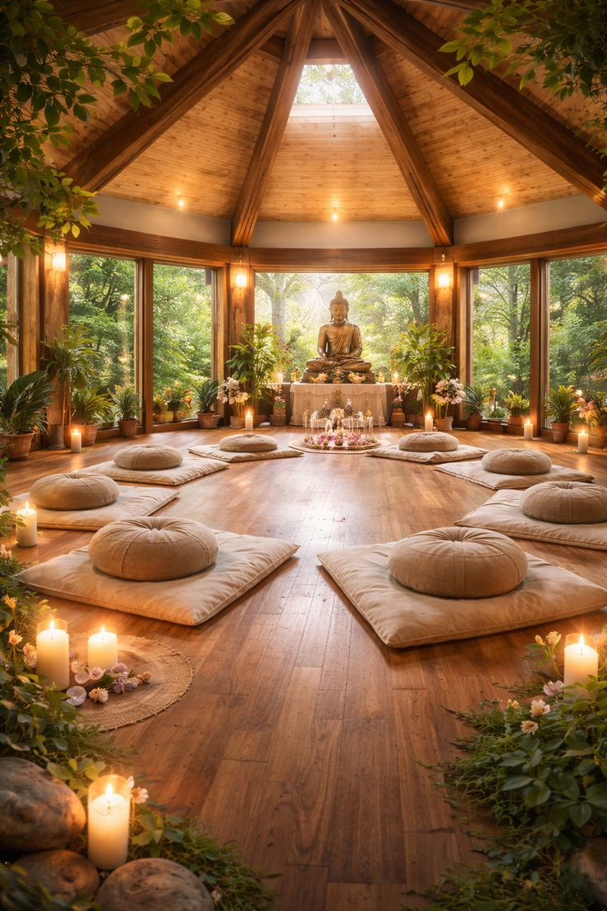

Kandy Hills, Sri Lanka
Inner Peace
Saraṇa is a small meditation center set among tea hills outside Kandy — a place for guided sittings, silent retreats, and the slow work of paying attention.
Why Saraṇa
A center built around one idea: sit down, and stay a while.
Founded in 2011 on a hillside outside Kandy, Saraṇa keeps a simple rhythm — early sittings, walking practice, and long afternoons of quiet. No app, no streak to keep. Just a cushion, a bell, and enough time to actually arrive.
We work with teachers trained in the Theravāda tradition alongside movement and sound practitioners, so the days here mix stillness with breath-led movement and rest.
Read our story
"Four days here reset something in me that years of apps never touched."
Discover the path to inner harmony and enlightenment, and embrace tranquility.
A Single Day, Unfolding
The road climbs, and the noise falls away
Kandy gives way to tea hills, and the tea hills give way to quiet. By the time you reach the gate, most people notice their shoulders have already dropped an inch.
A slow line through the forest edge
Midday walking meditation traces the old dhutanga path along the terraces — one breath, one step, no destination beyond the one you're standing on.
The bell rings, and you simply stay
In the main hall, silence isn't something you have to fill. A resident teacher holds the space; you just have to keep showing up to your own breath.
The day closes on the open-air deck
Evenings end with sound and stillness under the sky, the day's practice settling in before it starts again tomorrow, at the same unhurried pace.
Cultivate Stillness
Daily Programs
Four ways to practice, every single day
Drop into a single session or thread several together — each is taught by a resident teacher and open to all levels.
Guided Sitting
Breath-anchored meditation for beginners and long-time practitioners alike, held twice daily.
Yoga & Movement
Slow, breath-led sequences designed to loosen the body before longer sitting practice.
Sound Healing
Sessions built around Kandyan singing bowls and long-held tones for deep nervous-system rest.
Walking Meditation
Slow walking through the tea terraces, tracing attention to each step and each breath.
A Typical Day
The rhythm of Saraṇa
Sunrise Sitting
Silent meditation in the main hall, facing the valley.
Yoga & Movement
Gentle breath-led sequences on the open-air deck.
Walking Meditation
A slow loop through the tea terraces and forest edge.
Dharma Talk
Short teaching and open discussion with a resident teacher.
Sound Healing
Singing bowls and long tones to close the day.
Voices from the Hall
What people carry home
"Four days here reset something in me that years of apps never touched. The silence is the real teacher."
"The walking meditation through the tea terraces at midday might be the simplest, best hour of my week."
"I came for a weekend and stayed for the full retreat. The teachers meet you exactly where you are."
"Sound healing in that hall, with the rain outside — I still hear it when I need to calm down."
Begin Whenever You're Ready
Your cushion is waiting on the hillside.
Join a single sitting, a weekend, or a full silent retreat — arrivals welcome most days of the week.
Plan Your Visit